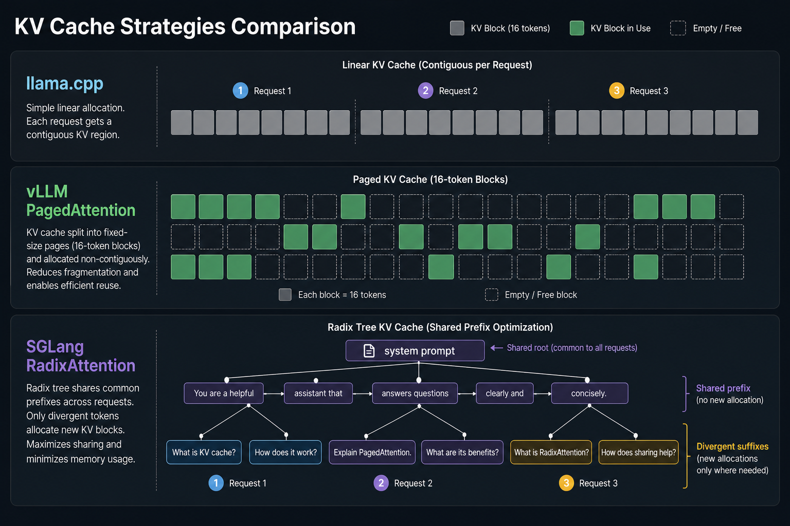
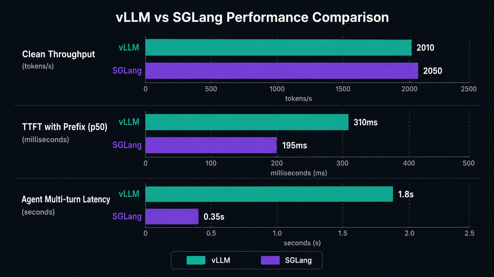
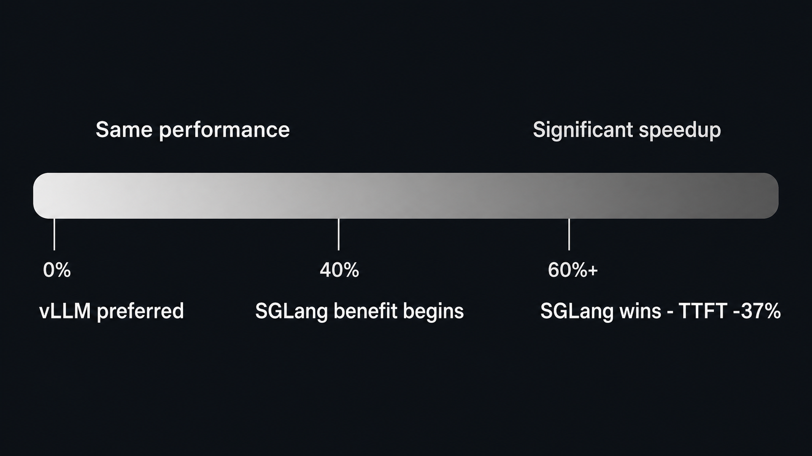
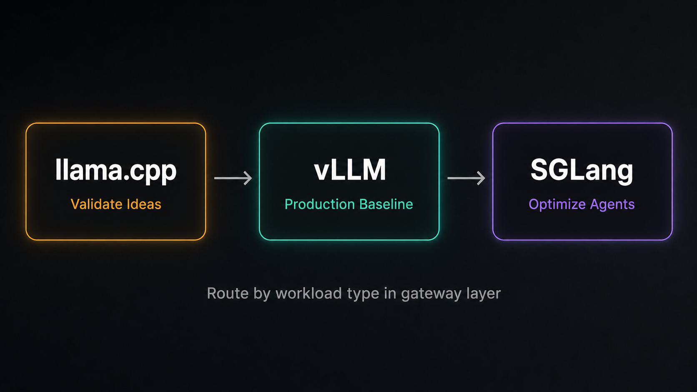

梦兽编程 · 2026年7月
去年底我开始把一部分 API 请求从 OpenAI 切到自托管。最开始就一个想法：省钱。后来发现这事远不止省钱——不同的推理框架对同一种负载的表现可以差好几倍，而且差的不是「谁优化得好」，是「你的流量到底长什么样」。
这里聊三个我用过或者深度测过的框架：llama.cpp、vLLM、SGLang。不说谁更好，就说它们各自适合什么场景，以及我踩过的坑。

llama.cpp 的设计目标非常单纯：让大模型能在任何设备上跑。纯 C/C++，不依赖 Python，不依赖 CUDA。编译出来就一个 50MB 的二进制，拷到 U 盘里插上就能用。
这个定位决定了它所有的技术选择。KV 缓存是最基础的分页，没有连续批处理，服务端并发大概 16 个槽位就到头了。它不是为了高并发设计的——是在你用一台 MacBook 或者树莓派跑 7B 模型的时候，保证不 OOM。
GGUF 量化是 llama.cpp 最被低估的东西。Q4_K_M 大概保留 92% 的模型质量，70B 压缩到 40GB，能塞进一张 RTX 4090。啥意思呢，就是你在自己电脑上跑的模型质量，跟云端托管 API 的差距其实没那么大。
什么情况下用它：个人折腾、本地隐私推理、离线环境、给一两个朋友搭个 API 玩玩。什么情况下别用：你想开 20 个并发。llama.cpp 不是小版 vLLM，它的架构和 vLLM 是两条路。等「扛不住」再换基本就是重来。
单流速度参考：RTX 4090 跑 Llama 3 70B Q4_K_M 约 45-55 tok/s。M4 Mac mini 跑 7B Q4 约 35 tok/s。够用，但别拿去给一群人做 API。
vLLM 的核心创新是 PagedAttention——把 KV 缓存切成 16 token 的固定块，按需分配，不要求连续内存。这个思路直接照搬了操作系统的虚拟内存分页。做出来以后，同样的显存能塞进 4-5 倍的并发请求。
但 vLLM 真正厉害的不是技术，是生态。Amazon Rufus 购物助手服务 2.5 亿客户用的就是 vLLM，LinkedIn 有 50 多个生成式 AI 用例跑在上面，Roblox 用它做全平台推理引擎。大多数生产环境的坑都有人踩过了，GitHub Issue 一搜就有答案。
我的实际体验：不确定选什么的时候选 vLLM，至少不会翻车。它的文档是三个框架里最厚的，从 TGI 迁移过来大概一到三天。关键参数像 max-num-seqs、gpu-memory-utilization 都有成熟的社区经验值。
但有个事值得注意：vLLM 的前缀缓存是选配的（--enable-prefix-caching），默认没开。如果你跑的是 Agent 负载——每个请求都带同样的系统提示词和工具定义——不开缓存等于每次都把相同的前缀算一遍。
2026 年 1 月，vLLM 核心维护者创立商业公司 Inferact，拿了 1.5 亿美元种子轮。他们承诺 Apache 2.0 许可不变。对选型来说这是个好消息：核心依赖项目不会突然失速。
SGLang 的卖点是 RadixAttention：用基数树管理 KV 缓存，新请求进来先查树，找到最长匹配前缀就直接复用。不像 vLLM 那样要求前缀正好对齐 16 token 的块边界——任意长度的部分重叠都能命中。
这个设计在 Agent 场景下特别有用。每个 Agent 每一步都带着系统提示词、工具 schema、多轮历史——这三样东西加起来动辄几千 token，而且每个实例都一样。SGLang 让你只算一次，后面全部命中缓存。
但这里有个很容易被忽略的坑：RadixAttention 的收益不是白给的。它依赖你的流量有足够多的重复前缀。如果你的流量是代码补全——每次上下文都不一样——那它不仅没加速，反而因为维护基数树和权重的显存竞争倒贴开销。
看一组真实数据。Spheron 今年 6 月在单卡 H100 上测 Llama 3.3 70B：

注意第一行：没有前缀复用的时候，两者几乎一样。SGLang 的加速完全取决于你的流量有重复前缀——没有重复的时候它就是普通推理引擎。
SGLang 2026 年上半年集中爆了好几个高危漏洞，包括 CVSS 9.8 的未授权 RCE。如果你只用 vLLM 不需要操心安全补丁节奏，SGLang 需要。这不是说它不好，是说它更适合有专人维护的团队。
大多数人选框架会先跑一堆 benchmark。吞吐、延迟、并发上限全测一遍。然后拿着数字做决定。
但有个指标比所有这些都更关键，而且大部分人没测过：你的流量里，有多少请求共享了相同的前缀 token。
这个数字直接决定 SGLang 的 RadixAttention 对你的流量到底有没有用。低于 40%，vLLM 和 SGLang 没区别，选文档更厚的 vLLM。40% 到 60%，SGLang 开始有明显优势。超过 60%，SGLang 的 TTFT 能降 37%，成本能降 30%。

怎么测：抓几千条生产请求的 prompt，算请求之间的最长公共前缀分布。如果中位数超过几百 token 而且覆盖大量请求，你应该认真考虑 SGLang。如果几乎每条 prompt 都不一样，选 vLLM 就行，没必要多维护一套路由。
我一直觉得这是工程上最被低估的事情：花一个下午搞清楚自己的流量结构，比花一周跑 20 组 benchmark 有用得多。
不复杂，就三步：
第一步，用 vLLM 搭生产基线。不确定选什么的时候，选 vLLM。文档最厚，问题最好查，参数调优的经验值最成熟。先跑起来，把监控搭好。
第二步，测前缀重叠率。跑一个月的真实流量，抓几千条 prompt 做前缀分析。
第三步，如果重叠率稳定超过 60%，把 Agent 型流量切到 SGLang。vLLM 和 SGLang 都是 OpenAI 兼容 API，切流量就是改一个 base URL。真正的成本在重建基准和调参。

对三人以上的团队，更实际的做法是在网关层按模型和负载类型路由：llama.cpp 负责开发机和边缘设备，vLLM 跑通用生产流量，SGLang 专攻 Agent 和前缀密集场景。三个框架共存不是什么过度工程，是成熟团队的常态。
| 你的情况 | 用哪个 | 为什么 |
|---|---|---|
| 个人验证 · 本地跑跑 | llama.cpp | 唯一不需要 GPU 的选择，5 分钟上手 |
| Mac 本地推理 | llama.cpp | Metal 后端成熟，7B 能跑到 62 tok/s |
| 搭生产 API · 还不清楚流量特征 | vLLM | 文档最厚，出问题最好查 |
| 通用聊天 API 服务 | vLLM | 连续批处理成熟，llm-d 可以上 K8s |
| 跑很多个 Agent 同时干活 | SGLang | Agent 负载能快好几倍，系统提示词和工具定义只算一次 |
| RAG · 固定语料反复问 | SGLang | 前缀复用率高的时候 TTFT 降 37% |
| 要兼容 AMD / TPU | vLLM | 硬件覆盖最广 |
| RL 训练需要推理后端 | SGLang | verl、slime 这些框架都原生支持 |
推理框架以周为单位在迭代。vLLM 的 MRv2 正在默认化，SGLang 在搞分层缓存和 PD 分离，llama.cpp 的服务端能力也在慢慢加。今天写的东西三个月后可能就过时了。
但有一点不怎么变：框架选型最核心的问题不是「哪个最快」，是你的流量到底长什么样。搞清楚这个，比跑多少 benchmark 都管用。
想找人帮你搭推理管线？
扫码关注「梦兽编程」公众号，发送「推理框架」获取选型清单。
全栈之巅 · 梦兽编程 | rexai.top
性能数据来自 Spheron、LLM Academy、n4n AI 独立基准测试（2026.04-07）。选型前请在目标硬件和真实流量上复测。